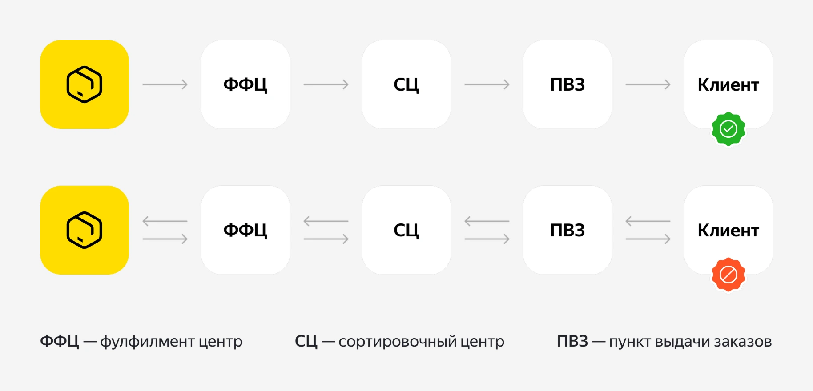

Путь заказа и зоны ПВЗ
ПВЗ принимает заказы, хранит их и выдаёт покупателям. Отправления на вывоз лежат отдельно в зоне DROP.
- Найди стойку выдачи, склад и зону DROP.
- Проследи путь заказа от сортировочного центра до клиента.

Схема движения отправления из базы знаний Маркета - Уточни у наставника, куда кладут возвраты и какие потоки принимает твой пункт.
Проверь себя
Куда кладут оформленный возврат перед вывозом?
Показать ответ
В зону DROP.